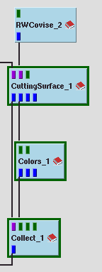
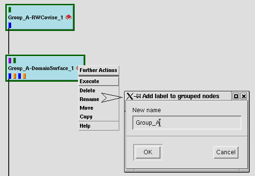
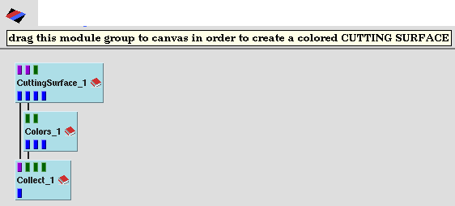
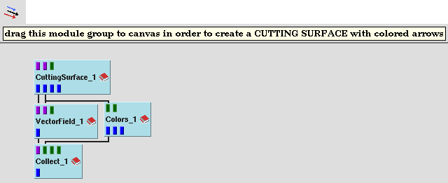
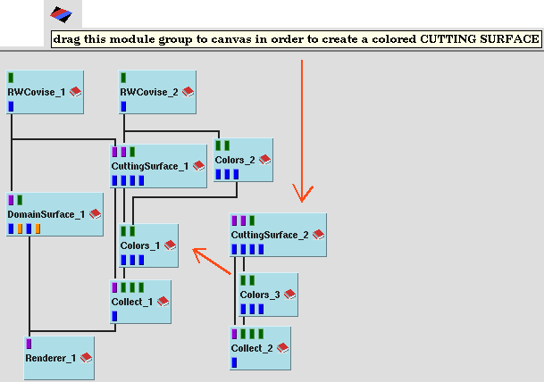

For 3 frequently used module groups COVISE goes a step further: Instead of grouping these modules manually you can these predefined module groups (including the connections) into the Canvas:

|  |
Grouping
of Modules
Modules can be grouped
in the working area - like CuttingSurface-Colors-Collect in the example
- and all actions (e. g. move) are now available for the group.
There are two methods (use left mouse button):
Click on an empty part of the working area to determine the startpoint of the rubberband rectangle. Keep the mouse button pressed and move the mouse so that all module icons to be grouped together are completely inside the rectangle. After the mouse button is released the grouped module icons receive a green frame. If you click on an
empty part of the working area again the group is ungrouped
|
Using the 'Rename' function (see Working
with modules) you can also add a label for module groups:
(e.g. RWCovise and DomainSurface are labeled as 'Group_A')
|  |
| Quickstart
for Module Groups:
For 3 frequently used module groups COVISE goes a step further: Instead of grouping these modules manually you can these predefined module groups (including the connections) into the Canvas: |
| CuttingSurface - Colors - Collect |
|  |
| CuttingSurface - VectorField - Colors - Collect |
|  |
| Tracer - Colors - Collect |
|
The example below shows you how you could
have built tutorial_pressure_1.net more easily using the Quickstart module
group CuttingSurface-Colors-Collect
|  |
And if you ask for a still more comfortable solution, you can use the Complex Module CuttingSurfaceComp instead of the module group CuttingSurface-Colors-Collect.
In general, we recommend to use one of
the three Complex
Modules instead of the corresponding Quickstart
module group, if possible.